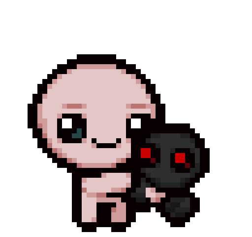

Bienvenido a mi Wiki Personal de The Binding Of Isaac
Aquí podrás ver desde los personajes en un diseño limpio hasta informacion e historia del juego.
Aquí podrás ver desde los personajes en un diseño limpio hasta informacion e historia del juego.